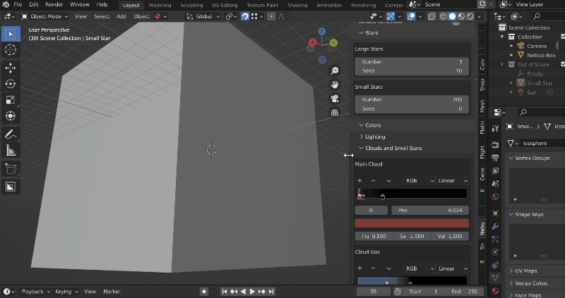
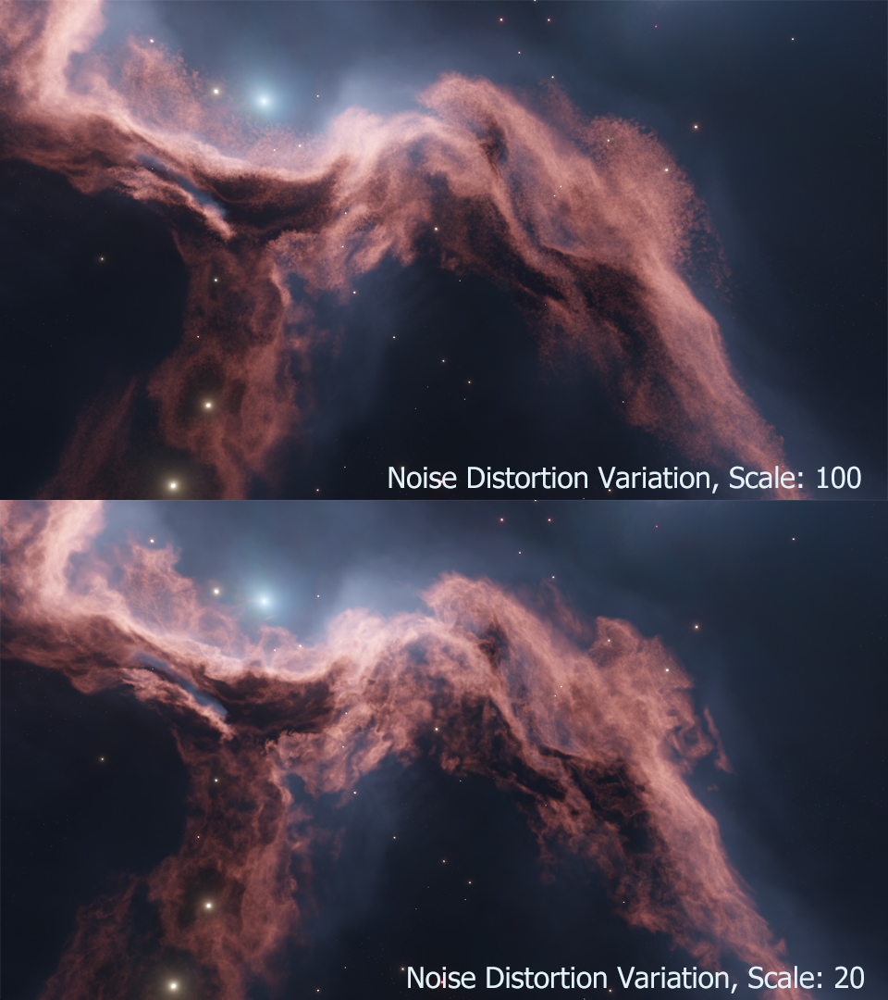
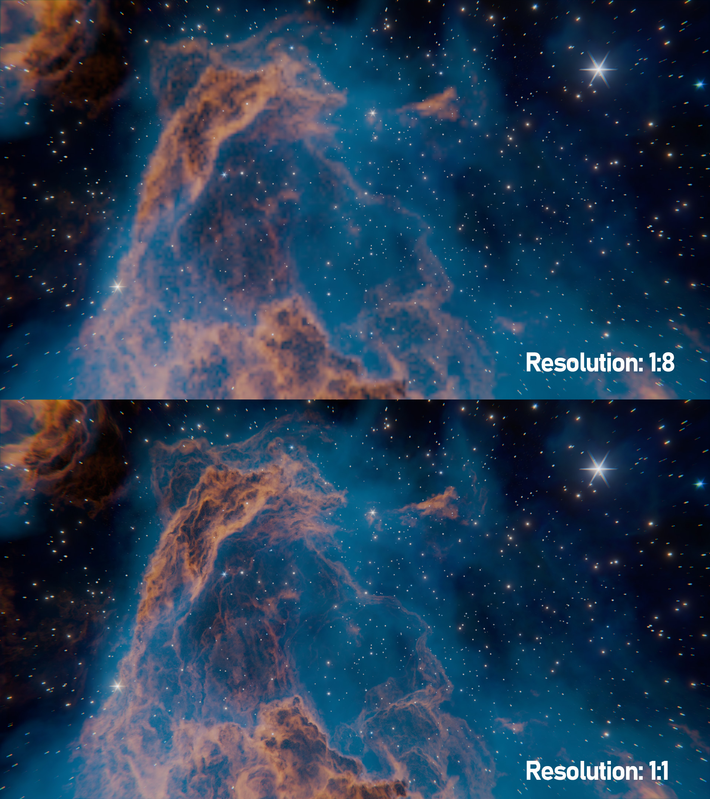
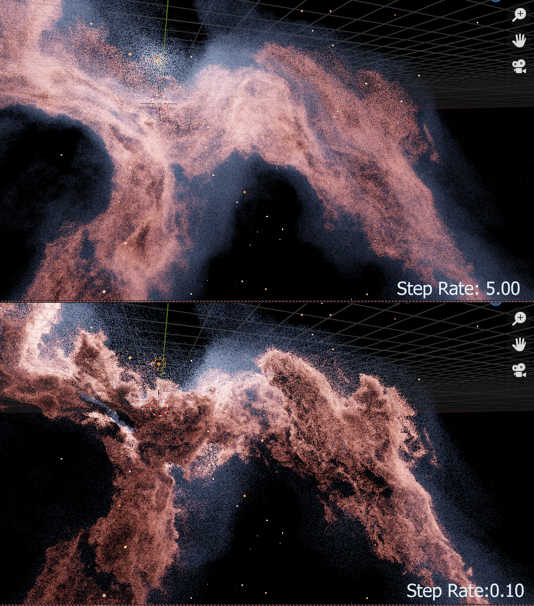

Select the Add-ons tab on the left if it is not already.
In the top right drop-down, select the Install from Disk… button along the top.
This will open a file dialog where you should navigate to where you have downloaded the nebula_generator.x.x.x.zip file (where x.x.x is the version number). This file should not be unzipped.
Then, click the Install from Disk button.
Search for the add-on by typing Nebula Generator in the search box if it does not already appear.
Make sure the checkbox next to the Add-on (Nebula Generator) is ticked:
Open one of the Nebula Generator’s .blend files. You will not be able to see or use the panel otherwise.
If you cannot see any tabs on the left hand side of the viewport, press the ‘N’ key.
Navigate to the tab named “Nebula Generator”.
Tip
Using the shift key whilst dragging the mouse over the parameters will provide a higher degree of control.
Warning
The control panel works on the nodes and particle systems of the .blend file. Adding or Deleting the nodes or particles will stop the panel from working.
See the FAQ section if you are having issues and don’t hesitate to get in touch
The smaller stars do not actually emit light and are exist to proved background and depth.
Seed: This is a seed value to control the random placement of the stars. Changing this number will randomly place the stars in different positions.
Star Coverage: This is the coverage of the stars across the nebula. Coverage is controlled by a noise function which distributes the stars in different amounts across the scene. Higher values will increase the number of stars.
Star Density: This is how tightly packed the stars are.
Noise Scale: The size of the noise function controlling the coverage of the stars.
Min Star Size: The minimum size of the large stars.
Max Star Size: The maximum size of the large stars.
Color Ramp: This is a color ramp control to change the color of the lighter clouds that surround the clouds. Values on the left hand side of the ramp controls the colors of the least dense part of those clouds, where values on the right control the most dense parts.
Hue/Sat/Val: This alters the hue, saturation and value of the ramp color. Colors changes will be shown in the viewport, but not on the ramp controls.
Color Ramp: This is a color ramp control to change the different colors of the small background stars. The range of colors along the ramp are randomly assigned to each star.
Hue/Sat/Val: This alters the hue, saturation and value of the colors. Colors changes will be shown in the viewport, but not on the ramp controls.
This controls the overall Hue, Saturation and Value of the clouds and small stars. This is useful if you are happy with the overall values that are set. Note the lighting is altered separately.
Tip

You can expand the width of the panel so you have more room to control the color ramps.
This controls the density of the main clouds. In Absorption Nebula, these are the parts of the clouds that absorb all light.
The color ramp controls where this Absorption cloud starts and ends. The white part of the gradient ramp will be the thickest part of the cloud and the black parts will have no cloud at all. Try dragging different parts of the gradient to get different effects, or by adding or removing different control points on the gradient.
The Density Multiplier increases the thickness of the clouds even further.
This controls the density of the gas surrounding the clouds. These clouds scatter rather than absorb light. The color ramp controls where the cloud starts and ends. The white parts of the gradient ramp will be the thickest part of the gas and the black parts will have no clouds at all.
The Density Multiplier decreases the thickness of the clouds even further to give a light scattering effect.
The cloud shapes are generated using a set of noise functions overlayed on top of each other. See this article for how noise functions are used in computer graphics.
To get a variety of effects, changing the parameters here will change the different inputs to those noise functions.
Tip
If you wish to have even greater control, try changing the noise node set-up in the “Shape” section of the shader tab. However, this section of the control panel will no longer work properly as it is tied to the existing node setup.
The ‘distortion’ of the overall noise is also manipulated by another noise function.
Although not always apparent in preview mode, this adds a greater level of smaller surface detail to the clouds. Be careful increasing the parameters such as ‘scale’ too high or the clouds may appear too noisey at render time:

Scale: The size of the noise effect that is used to manipulate the overall distortion.
Detail: Number of noise octaves or waves, creating more variation in the distortion of the clouds.
Roughness: Number of ‘peaks’ in the noise used to affect the overall distortion of the clouds.
Distortion: The amount of bending or distortion being applied to the overall noise distortion.
The nebula fradually fades from the center of the object. These controls change the amount of falloff, or fase, that occurs.
Transparency Gradient Ramp: This controls the transparency of the nebula. The white part of the gradient ramp will be the most transparent part of the nebula, where the black parts will be the least transparent.
Transparency Sphere Size: The size of the sphere that the transparency falloff is applied to.
Depending on whether you are rendering in Eevee or Cycles, the following parameters expose the most frequently used settings when controlling the quality of the nebula image.
Tip
These settings and more can be found on the standard Render Properties tab as well, and are provided here for convenience.
Render Engine: Choose between Eevee and Cycles modes. Not sure which? See the FAQ section.
Volumetric Resolution: Arguably one of the most important settings in Eevee volumetric rendering, this controls the level of detail for the render. The higher the resolution ratio (1:1) means a greater level of detail at the expense of memory usage and render times which will also slow down your GPU in Eevee. Whilst altering the nebula parameters, it is best to keep the setting at either 1:4 or 1:8 and then change to 1:1 for the final render.

Render Samples: Number of render time samples per pixel. Increasing this value will increase the detail of the clouds and can reduce speckles in the noise.
Viewport Samples: Number of viewport render samples per pixel.
Volume Steps: This controls the number of times that Eevee calculates a render pass for the volume in the nebula.
Volumetric Shadow Samples: This controls the number of times that Eevee calculates the quality of the shadows when doing a render pass. This can reduce flickering and strobing effects.
Bloom Threshold: This affects the glow of the stars. Reducing this value increases the number of stars affected and the overall brightness of the nebula.
Denoising is automatically switched on whilst rendering to remove Fireflies, or speckles, in the nebula effect. Sometimes, this may produce a slightly liquid effect at lower sample settings. You may wish to turn the denoiser off and increase the sample settings in this case.
Denoiser: Which denoising function to use. Using this combined with the samples settings should produce a smoother result.
This essentially controls the ‘thickness’ of the nebula volume in the viewport, or in other words the distance between points in the volume. Lower values increase the thickness.

Viewport Step Rate: The ‘thickness’ of the nebula volume in the viewport.
Render Step Rate: The ‘thickness’ of the nebula volume in the viewport at render time.
{kind=link}